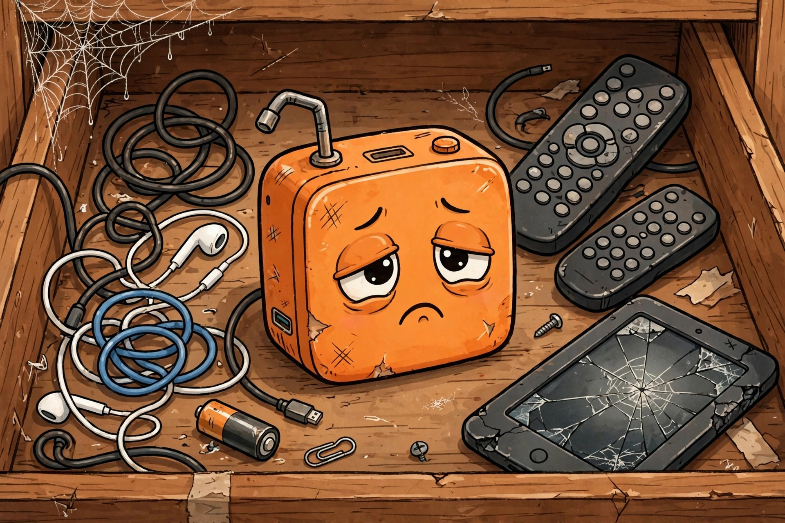

The AI Gadget Lifecycle: From Keynote to Junk Drawer

The tech industry has a new ritual. A startup announces a small device with a big promise: the future, minus your phone. The keynote is gorgeous. The pre-orders sell out. The reviews land. And within a year or two the gadget is discontinued, the cloud service shuts off, and your pocket holds a very expensive paperweight — one that used to talk.
We've watched this so many times the stages are predictable: Tony Fadell — who co-invented the iPhone — recently put the Rabbit R1, Humane AI Pin, and Limitless pendant on one slide as "Gen 1 AI products," all headed to the scrap heap. His diagnosis: they "didn't meet any kind of need." Here's the lifecycle, staged so you'll recognize it at the next launch.
Stage 1: The Keynote Mystique
It begins with a dark stage and a brighter promise. The founders describe a post-screen future with the confidence of people who have never waited for a subway transfer. The gadget is small, beautiful, vaguely orange — projecting onto your hand, whispering into your day.
The pre-order window opens. The Rabbit R1 sold 100,000 units — an orange box with a scroll wheel and a camera, promising a "Large Action Model" that would operate your apps for you. You're not buying a gadget; you're buying membership in the future, and the future only admits the first 100,000.
Stage 2: The Review Embargo Lift
This is where love meets gravity: the problems are immediate and cinematic. The Humane AI Pin — $699 plus a subscription, no screen — overheated, misheard commands, and drained its battery in hours; one reviewer called it "the worst product I've ever reviewed." The Rabbit R1 was a sluggish device running Android apps in a wrapper that couldn't reliably do what a phone does. The Friend AI pendant — a $129 companion that listens constantly — answered seven to ten seconds late and regularly forgot the user's name. Hard to feel accompanied by someone who doesn't know your name.
The reviews share a shape: the demo was theater, the latency is real, and the thing in your hand is worse than the thing already in your pocket.
Stage 3: The Refund Reckoning
Five months after launch, only 5,000 of the Rabbit R1's 100,000 buyers were still active — a 95 percent abandonment rate. Founder Jesse Lyu admitted it launched too early. At least he was honest, which is more than the gadget's battery could say.
This is where early adopters gather in forums for the refund-request ritual, and companies learn the difference between "sold" and "kept." Fadell's explanation: fewer than 0.01 percent of people have ever employed a human assistant — so executives building "the ultimate aide" are projecting their own staff experience onto people who "don't even know what an assistant is."
Stage 4: The Pivot-or-Perish
The Humane AI Pin was discontinued on February 28, 2025 — under a year after launch. The cloud shut down and every existing Pin was bricked the same day: a cloud-dependent gadget is a subscription wearing a hardware costume. Its assets went to HP for roughly $116 million — a fraction of the $230 million raised. The Limitless pendant was discontinued in December 2025 after Meta acquired the company and folded the tech into its wearables. Another $30 million in funding, gone.
Stage 5: The Junk Drawer
And so the device joins the drawer — next to the 2016 fitness band, the cracked e-reader, the universal remote that controls nothing. Charged to 4 percent, forever. Once a year you pick it up, press the button, remember the keynote, and put it back. The junk drawer is where optimism naps: not a graveyard of fools, but a museum of a future that arrived early and left without its luggage.
The Gen-1 autopsy table
| Device | Launch price | Fatal flaw | Epitaph |
|---|---|---|---|
| Humane AI Pin | $699 + subscription | Screenless, overheating, bricked Feb 2025 | "Different is not the same as better" |
| Rabbit R1 | $199 | 95% of users gone in 5 months | "Sold 100,000; kept 5,000" |
| Friend pendant | $129 | 7–10s delays, forgot names | "AI is not your friend" — actual subway vandals |
| Limitless pendant | — | $30M funding, absorbed by Meta | "Excited to bring our technology to a broader platform" |
| Plaud Note | — | None: 2M+ shipped, $100M ARR on $6M raised | "One problem solved, no phone replaced" |
Note the survivor. Plaud's card-sized meeting recorder records up to 30 hours and transcribes across 112 languages — it didn't try to be your assistant; just a better notepad, one problem for one audience.
Should you preorder? Five questions
- Does it promise to replace your phone? Your phone has a screen, a battery, and apps that work — the gadget is asking you to trade down and pay for it.
- Is there a subscription for basic features? A gadget that stops working when the company stops billing you is a rental with extra steps.
- Can you try it before you buy it? A pre-order window with a countdown timer means you're the beta tester and the marketing budget.
- Does the demo need a narrator explaining what just happened? If the magic requires commentary, it's a trick, not a product.
- Would you want it if it did exactly what your phone already does? Be honest. The drawer is already full.
Score it: 0–1 — go ahead, live a little. 2–3 — wait for the reviews; the embargo lift is free. 4–5 — put the card down. A keynote is a trailer, not a promise.
FAQ
Is the Rabbit R1 still being updated?
Yes — updates have shipped through 2025 and into 2026, but it remains a niche curiosity, not a category-defining product.
What would Fadell build instead?
Something narrow, reliable, and trustworthy with your data — he predicts the winning AI agent runs entirely on-device. "What problem are we solving?" is the whole pitch.